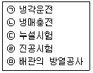

공조냉동기계기능사 (2016-04-02 기출문제)
1과목: 공조냉동안전관리
1. 용접기 취급상 주의사항으로 틀린 것은?
- 용접기는 환기가 잘되는 곳에 두어야 한다.
- 2차측 단자의 한쪽 및 용접기의 외통은 접지를 확실히 해 둔다.
- 용접기는 지표보다 약간 낮게 두어 습기의 침입을 막아 주어야 한다.
- 감전의 우려가 있는 곳에서는 반드시 전격방지기를 설치한 용접기를 사용한다.
(정답률: 85%)

2. 냉동기 검사에 합격 한 냉동기에는 다음‘사항을 명확히 각인한 금속박판을 부착하여야 한다. 각인할 내용에 해당되지 않는 것은?
- 냉매가스의 종류
- 냉동능력(RT)
- 냉동기 제조자의 명칭 또는 약호
- 냉동기 운전조건(주위온도)
(정답률: 71%)
3. 냉동장치를 정상적으로 운전하기 위한 유의 사항이 아닌 것은?
- 이상고압이 되지 않도록 주의한다.
- 냉매부족이 없도록 한다.
- 습 압축이 되도록 한다.
- 각 부의 가스 누설이 없도록 유의한다.
(정답률: 90%)
4. 전동공구 작업 시 감전의 위험성을 방지하기 위해 해야 하는 조치는?
- 단전
- 감지
- 단락
- 접지
(정답률: 87%)
5. 냉동장치를 설비 후 운전할 때 보기의 작업순서로 올바르게 나열된 것은?(일부 핸드폰 환경에서 보기가 정상적으로 보이지 않아서 괄호뒤에 다시 표기하여 둡니다.)(오류 신고가 접수된 문제입니다. 반드시 정답과 해설을 확인하시기 바랍니다.)

- ㉢→㉣→㉡→㉤→㉠(ㄷ→ㄹ→ㄴ→ㅁ→ㄱ)
- ㉣→㉤→㉢→㉡→㉠(ㄹ→ㅁ→ㄷ→ㄴ→ㄱ)
- ㉢→㉤→㉣→㉡→㉠(ㄷ→ㅁ→ㄹ→ㄴ→ㄱ)
- ㉣→㉡→㉢→㉤→㉠(ㄹ→ㄴ→ㄷ→ㅁ→ㄱ)
(정답률: 68%)
6. 배관 작업 시 공구 사용에 대한 주의사항으로 틀린 것은?
- 파이프 리머를 사용하여 관 안쪽에 생기는 거스러미 제거 시 손가락에 상처를 입을 수 있으므로 주의해야 한다.
- 스패너 사용 시 볼트에 적합한 것을 사용해야 한다.
- 쇠톱 절단 시 당기면서 절단한다.
- 리드형 나사절삭기 사용 시 조(jaw) 부분을 고정시킨 다음 작업에 임한다.
(정답률: 84%)
7. 다음 중 소화방법으로 건조사를 이용하는 화재는?
- A급
- B급
- C급
- D급
(정답률: 65%)
8. 해머 작업 시 안전수칙으로 틀린 것은?
- 사용 전에 반드시 주위를 살핀다.
- 장갑을 끼고 작업하지 않는다.
- 담금질된 재료는 강하게 친다.
- 공동해머 사용 시 호흡을 잘 맞춘다.
(정답률: 85%)
9. 기계설비의 본질적 안전화를 위해 추구해야 할 사항으로 가장 거리가 먼 것은?
- 풀 프루프(fool proof)의 기능을 가져야 한다.
- 안전 기능이 기계설비에 내장되어 있지 않도록 한다.
- 조작상 위험이 가능한 없도록 한다.
- 페일 세이프(fail safe)의 기능을 가져야 한다.
(정답률: 88%)
10. 산업안전보건기준에 관한 규칙에 의하면 작업장의 계단의 폭은 얼마 이상으로 하여야 하는가?
- 50㎝
- 100㎝
- 150㎝
- 200㎝
(정답률: 76%)
11. 안전모와 안전대의 용도로 적당한 것은?
- 물체 비산 방지용이다.
- 추락재해 방지용이다
- 전도 방지용이다.
- 용접작업 보호용이다.
(정답률: 88%)
12. 공구의 취급에 관한 설명으로 틀린 것은?
- 드라이버에 망치질을 하여 충격을 가할 때에는 관통 드라이버를 사용하여야 한다.
- 손 망치는 타격의 세기에 따라 적당한 무게의 것을 골라서 사용하여야 한다.
- 나사 다이스는 구멍에 암나사를 내는데 쓰고, 핸드 탭은 수나사를 내는데 사용한다.
- 파이프 렌치의 알에는 이가 있어 상처를 주기 쉬우므로 연질 배관에는 사용하지 않는다.
(정답률: 76%)
13. 가스보일러의 점화 시 착화가 실패하여 연소실의 환기가 필요한 경우, 열손실 용적의 약 몇 배 이상 공기량을 보내어 환기를 행해야 하는가?
- 2
- 4
- 8
- 10
(정답률: 72%)
14. 컨베이어 등을 사용하여 작업할 때 작업시작 전 점검사항으로 해당되지 않는 것은?
- 원동기 및 풀리 기능의 이상 유무
- 이탈 등의 방지장치 기능의 이상 유무
- 비상정지장치 기능의 이상 유무
- 작업면의 기울기 또는 요철유무
(정답률: 77%)
15. 산소 압력 조정기의 취급에 대한 설명으로 틀린 것은?
- 조정기를 견고하게 설치한 다음 가스누설 여부를 비눗물로 점검한다.
- 조정기는 정밀하므로 충격이 가해지지 않도록 한다.
- 조정기는 사용 후에 조정나사를 늦추어서 다시 사용할 때 가스가 한꺼번에 흘러나오는 것을 방지한다.
- 조정기의 각부에 작동이 원활하도록 기름을 친다.
(정답률: 81%)
2과목: 냉동기계
16. 1kg 기체가 압력 200kPa, 체적 0.5m3 상태로부터 압력 600 kPa, 체적 1.5m3로 상태변화 하였다. 이 변화에서 기체내부의 에너지변화가 없다고 하면 엔탈피의 변화는?
- 500kJ만큼 증가
- 600kJ만큼 중가
- 700kJ만큼 증가
- 800kJ만큼 중가
(정답률: 47%)
17. 냉동장치의 냉매배관의 시공상 주의점으로 틀린 것은?
- 흡입관에서 두 개의 흐름이 합류하는 곳은 T이음으로 연결한다.
- 압축기와 응축기가 같은 위치에 있는 경우 토출관은 일단 세워 올려 하향구배로 한다.
- 흡입관의 입상이 매우 길 때는 약 10m마다 중간에 트랩을 설치한다.
- 2대 이상의 압축기가 각각 독립된 응축기에 연결 된 경우 토출관 내부에 가능한 응축기 입구 가까이에 균압관을 설치한다.
(정답률: 67%)
18. 냉동장치의 냉매계통 중에 수분이 침입하였을 때 일어나는 현상을 열거한 것으로 틀린 것은?
- 프레온 냉매는 수분에 용해되지 않으므로 팽창밸브를 동결 폐쇄시킨다.
- 침입한 수분이 냉매나 금속과 화학반응을 일으켜 냉매계통의 부식, 윤활유의 열화 등을 일으킨다.
- 암모니아는 물에 잘 녹으므로 침입한 수분이 동결하는 장애가 적은 편이다.
- R-12는 R-22 보다 많은 수분을 용해하므로, 팽창밸브 등에서의 수분동결의 현상이 적게 일어난다.
(정답률: 72%)
19. 프레온계 냉매의 특성에 관한 설명으로 틀린 것은?(오류 신고가 접수된 문제입니다. 반드시 정답과 해설을 확인하시기 바랍니다.)
- 열에 대한 안정성이 좋다.
- 수분의 용해성 이 극히 크다.
- 무색, 무취로 누설 시 발견이 어렵다.
- 전기 절연성이 우수하므로 밀폐형 압축기에 적합하다.
(정답률: 65%)
20. 만액식 증발기에서 냉매측 전열을 좋게 하는 조건으로 틀린 것은?
- 냉각관이 냉매에 잠겨 있거나 접촉해 있을 것
- 열전달 증가를 위해 관 간격이 넓을 것
- 유막이 존재하지 않을 것
- 평균 온도차가 클 것
(정답률: 63%)
21. 냉동장치의 배관 설치 시 주의사항으로 틀린 것은?
- 냉매의 종류, 온도 등에 따라 배관재료를 선택한다.
- 온도변화에 의한 배관의 신축을 고려한다.
- 기기 조작, 보수, 점검에 지장이 없도록 한다.
- 굴곡부는 가능한 적게 하고 곡률 반경을 작게 한다.
(정답률: 83%)
22. 흡입배관에서 압력손실이 발생하면 나타나는 현상이 아닌 것은?
- 흡입압력의 저하
- 토출가스 온도의 상승
- 비체적 감소
- 체적효율 저하
(정답률: 54%)
23. 흡수식 냉동사이클에서 흡수기와 재생기는 중기 압축식 냉동사이클의 무엇과 같은 역할을 하는가?
- 증발기
- 응축기
- 압축기
- 팽창밸브
(정답률: 57%)
24. 어떤 저항 R에 100V의 전압이 인가해서 10A의 전}류가 1분간 흘렀다면 저항 묘에 발생한 에너지는?
- 70000J
- 60000J
- 50000J
- 40000J
(정답률: 72%)
25. 임계점에 대한 설명은로 옳은 것은?
- 어느 압력 이상에서 포화액이 증발이 시작됨과 동시에 건포화 증기로 변하게 되는데, 포화액션과 건포화 증기선이 만나는 점
- 포화온도 하에서 증발이 시작되어 모두 증발하기까지의 온도
- 물이 어느 온도에 도달하면 온도는 더 이상 상승하지 않고 증발이 시작하는 온도
- 일정한 압력하에서 물체의 온도가 변화하지 않고 상(相)이 변화하는 점
(정답률: 70%)
26. 관의 직경이 크거나 기계적 강도가 문제될 때 유니온 대용으로 결합하여 쓸 수 있는 것은?
- 이경소켓
- 플랜지
- 니플
- 부싱
(정답률: 68%)
27. 동관 작업 시 사용되는 공구와 용도에 관한 설명으로 틀린 것은?
- 플레어링 툴 세트 - 관을 압축 접합할 때 사용
- 튜브벤더 - 관을 구부릴 때 사용
- 익스팬더 - 관 끝을 오므릴 때 사용
- 사이징 툴 - 관을 원형으로 정형할 때
(정답률: 67%)
28. 액 순환식 증발기에 대한 설명으로 옳은 것은?
- 오일이 체류할 우려가 크고 제상 자동화가 어렵다.
- 냉매량이 적게 소요되며 액펌프, 저압수액 등 설비가 간단하다.
- 증발기 출구에서 액은 80% 정도이고, 기체는 20% 정도 차한다.
- 증발기가 하나라도 여러 개의 팽창밸브가 필요하다.
(정답률: 72%)
29. 팽창밸브에 대한 설명으로 옳은 것은?
- 압축 증대장치로 압력을 높이고 냉각시킨다.
- 액봉이 쉽게 일어나고 있는 곳이다.
- 냉동부하에 따른 냉매액의 유량을 조절한다.
- 플래시 가스가 발생하지 않는 곳이며, 일명 냉각 장치라 부른다.
(정답률: 61%)
30. 증기 압축식 냉동장치의 냉동원리에 관한 설명으로 가장 적합한 것은?
- 냉매의 팽창열을 이용한다.
- 냉매의 증발잠열을 이용한다.
- 고체의 승화열을 이용한다.
- 기체의 온도차에 의한 현열변화를 이용한다.
(정답률: 69%)
31. 정현파 교류에서 전압의 실효값(V)을 나타내는 식으로 옳은 것은? (단, 전압의 최대값을 Vm, 평균값을 Va라고 한다.)
- V = Va / √2
- V = Vm / √2
- V = √2 / Va
- V = √2 / Vm
(정답률: 64%)
32. 용적형 압축기에 대한 설명으로 틀린 것은?
- 압축실 내의 체적을 감소시켜 냉매의 압력을 증가시킨다.
- 압축기의 성능은 냉동능력, 소비동력, 소음, 진동값 및 수명 등 종합적인 평가가 요구된다.
- 압축기의 성능을 측정하는 유용한 두 가지 방법은 성능계수와 단위 냉동능력당 소비동력을 측정하는 것이다.
- 개방형 압축기의 성능계수는 전동기와 압축기의 운전효율을 포함하는 반면, 밀폐형 압축기의 성능계수에는 전동기효율이 포함되지 않는다.
(정답률: 67%)
33. 냉매 건조기(dryer)에 관한 설명으로 옳은 것은?
- 암모니아 가스관에 설치하여 수분을 제거한다.
- 압축기와 응축기 사이에 설치한다.
- 프레온은 수분에 잘 용해되지 않으므로 팽창밸브에서의 동결을 방지하기 위하여 설치한다.
- 건조제료는 황산, 염화칼슘 등의 물질을 사용한다.
(정답률: 58%)
34. 스윙(swing)형 체크밸브에 관한 설명으로 틀린 것은?
- 호칭치수가 큰 관에 사용된다.
- 유체의 저항이 리프트(lift)형보다 적다.
- 수평배관에만 사용할 수 있다.
- 핀을 축으로 하여 회전시켜 개폐한다.
(정답률: 72%)
35. 냉동사이클 내를 순환하는 동작유체로서 잠열에 의해 열을 운반하는 냉매로 가장 거리가 먼 것은?
- 1차 냉매
- 암모니아(NH3)
- 프레온(freon)
- 브라인(brine)
(정답률: 61%)
36. 직접 식품에 브라인을 접촉시키는 것이 아니고 얇은 금속판 내에 브라인이나 냉매를 통하게 하여 금속판의 외면과 식물을 접촉시켜 동결하는 장치는?
- 접촉식 동결장치
- 터널식 공기 동결장치
- 브라인 동결장치
- 송풍 동결장치
(정답률: 62%)
37. 냉동 부속 장치 중 응축기와 팽창 밸브사이의 고압관에 설치하며, 증발기의 부하 변동에 대응하여 냉매 공급을 원활하게 하는 것은?
- 유분리기
- 수액기
- 액분리기
- 중간 냉각기
(정답률: 64%)
38. 냉매의 구비 조건으로 틀린 것은?
- 증발잠열이 클 것
- 표면장력이 작을 것
- 임계온도가 상온보다 높을 것
- 증발압력이 대기압보다 낮을 것
(정답률: 49%)
39. 비열비를 나타내는 공식으로 옳은 것은?
- 정적비열 / 비중
- 정압비열 / 비중
- 정압비열 / 정적비열
- 정적비열 / 정압비열
(정답률: 67%)
40. LNG 냉열이용 동결장치의 특징으로 틀린 것은?
- 식품과 직접 접촉하여 급속 동결이 가능하다.
- 외기가 흡입되는 것을 방지한다.
- 공기에 분산되어 있는 먼지를 철저히 제거하여 장치내부에 눈이 생기는 것을 방지한다.
- 저온공기의 풍속을 일정하게 확보함으로써 식품과의 열전달계수를 저하시킨다.
(정답률: 51%)
41. 열에너지를 효율적으로 이용할 수 있는 방법 중 하나인 축열장치의 특징에 관한 설명으로 틀린 것은?
- 저속 연속운전에 의한 고효율 정격운전이 가능하다.
- 냉동기 및 열원설비의 용량을 감소할 수 있다.
- 열회수 시스템의 적용이 가능하다.
- 수질관리 및 소음관리가 필요 없다.
(정답률: 75%)
42. 암모니아 냉동장치에서 팽창밸브 직전의 온도가 25℃, 흡입가스의 온도가 -10℃인 건조포화 증기인 경우, 냉매 1kg당 냉동효과가 350kcal이고, 냉동능력 15RT가 요구될 때의 냉매순환량은?
- 139kg/h
- 142kg/h
- 188kg/h
- 176kg/h
(정답률: 42%)
43. 흡수식 냉동기에서 냉매순환과정을 바르게 나타낸 것은?
- 재생(발생)기 → 응축기 → 냉각(증발)기 → 흡수기
- 재생(발생)기 → 냉각(증발)기 → 흡수기 → 응축기
- 응축기 → 재생(발생)기 → 냉각(증발)기 → 흡수기
- 냉각(증발)기 → 응축기 → 흡수기 → 재생(발생)기
(정답률: 70%)
44. 증발기 내의 압력에 의해서 작동하는 팽창밸브는?
- 저압측 플로트 밸브
- 정압식 자동팽창 밸브
- 온도식 자동팽창 밸브
- 수동 팽창 밸브
(정답률: 77%)
45. 2단 압축 냉동사이클에서 중간냉각기가 하는 역할로 틀린 것은?
- 저단압축기의 토출가스 온도를 낮춘다.
- 냉매가스를 과냉각시켜 압축비를 상승시킨다.
- 고단압축기로의 냉매 액 흡입을 방지한다.
- 냉매 액을 과냉각시켜 냉동효과를 증대시킨다.
(정답률: 42%)
3과목: 공기조화
46. 어떤 상태의 공기가 노점온도보다 낮은 냉각코일을 통과 하였을 때 상태변화를 설명한 것으로 틀린 것은?
- 절대습도 저하
- 상대습도 저하
- 비체적 저하
- 건구온도 저하
(정답률: 49%)
47. 팬의 효율을 표시하는데 있어서 사용되는 전압효율에 대한 올바른 정의는?
- 축동력 / 공기동력
- 공기동력 / 축동력
- 회전속도 / 송풍기의 크기
- 송풍기의 크기 / 회전속도
(정답률: 54%)
48. 다음 중 일반적으로 실내공기의 오염정도를 알아보는 지표로 시용하는 것은?
- CO2 농도
- CO 농도
- PM 농도
- H 농도
(정답률: 73%)
49. 덕트에서 사용되는 댐퍼의 사용 목적에 관한 설명으로 틀린 것은?
- 풍량조절 댐퍼 - 공기량을 조절하는 댐퍼
- 배연 댐퍼 - 배연덕트에서 사용되는 댐퍼
- 방화 댐퍼 - 화재 시에 연기를 배출하기 위한 댐퍼
- 모터 댐퍼 - 자동제어 장치에 의해 풍량조절을 위해 모터로 구동되는 댐퍼
(정답률: 70%)
50. 실내 현열 손실량이 5000kcal/h일 때, 실내온도를 20℃로 유지하기 위해 36℃ 공기 및 m3/h를 실내로 송풍해야 하는가? (단, 공기의 비중량은 1.2kgf/m3, 정압비열은 0.24kcaI/kg·℃이다.)
- 985m3/h
- 1085m3/h
- 1250m3/h
- 1350m3/h
(정답률: 44%)
51. 공기세정기에서 유입되는 공기를 정화시키기 위해 설치하는 것은?
- 루버
- 댐퍼
- 분무노즐
- 엘리미네이터
(정답률: 58%)
52. 단일덕트 정풍량 방식의 특징으로 옳은 것은?
- 각 실마다 부하변동에 대응하기가 곤란하다.
- 외기도입을 충분히 할 수 없다.
- 냉풍과 온풍을 동시에 공급할 수가 있다.
- 변풍량에 비하여 에너지 소비가 적다.
(정답률: 47%)
53. 보일러에 서 배기가스의 현열을 이용하여 급수를 예열하는 장치는?
- 절탄기
- 재열기
- 증기 과열기
- 공기 가열기
(정답률: 65%)
54. 감습장치에 대한 설명으로 옳은 것은?
- 냉각식 감습장치는 감습만을 목적으로 사용하는 경우 경제적이다.
- 압축식 감습장치는 감습만을 목적으로 하면 소요동력이 커서 비경제적이다.
- 흡착식 감습장치는 액체에 의한 감습보다 효율이 좋으나 낮은 노점까지 감습이 어려워 주로 큰 용량의 것에 적합하다.
- 흡수식 감습장치는 흡착식에 비해 감습효율이 떨어져 소규모 용량에만 적합하다.
(정답률: 53%)
55. 실내 상태점을 통과하는 현열비선과 포화곡선과의 교점을 나타내는 온도로서 취출 공기가 실내 잠열부하에 상당하는 수분을 제거하는데 필요한 코일표면온도를 무엇이라 하는가?
- 혼합온도
- 바이패스 온도
- 실내 장치노점온도
- 설계온도
(정답률: 61%)
56. 다음 개별식 공조방식에 해당되는 것은?
- 팬코일 유닛 방식(덕트병용)
- 유인 유닛 방식
- 패키지 유닛 방식
- 단일 덕트 방식
(정답률: 63%)
57. 증기난방에 사용되는 부속기기인 감압밸브를 설치하는 데 있어서 주의사항으로 틀린 것은?
- 감압밸브는 가능한 사용개소에 가까운 곳에 설치한다.
- 감압밸브로 응축수를 제거한 증기가 들어오지 않도록 한다.
- 감압밸브 앞에는 반드시 스트레이너를 설치하도록 한다.
- 바이패스는 수평 또는 위로 설치하고, 감압밸브의 구경과 동일한 구경으로 하거나 1차측 배관지름보다 한 치수 적은 것으로 한다.
(정답률: 36%)
58. 회전식 전열교환기의 특징에 관한 설명으로 틀린 것은?
- 로터의 상부에 외기공기를 통과하고 하부에 실내공기가 통과한다.
- 열교환은 현열뿐 아니라 잠열도 동시에 이루어진다.
- 로터를 회전시키면서 실내공기의 배기공기와 외기공기를 열교환 한다.
- 배기공기는 오염물질이 포함되지 않으므로 필터를 설치할 필요가 없다.
(정답률: 73%)
59. 온풍난방에 대한 장점이 아닌 것은?
- 예열시간이 짧다.
- 실내 온습도_조절이 비교적 용이하다.
- 기기설치 장소의 선정이 자유롭다.
- 단열 및 기밀성이 좋지 않은 건물에 적합하다.
(정답률: 65%)
60. 다음 설명 중 틀린 것은?
- 대기압에서 0℃ 물의 증발잠열은 약 597.3kcal/kg이다.
- 대기압에서 0℃ 공기의 정압비열은 약 0.44kcal/kg·℃이다.
- 대기압에서 20℃의 공기 비중량은 약 1.2kgf/m3이다.
- 공기의 평균 분자량은 약 28.96kg/kmol이다.
(정답률: 48%)